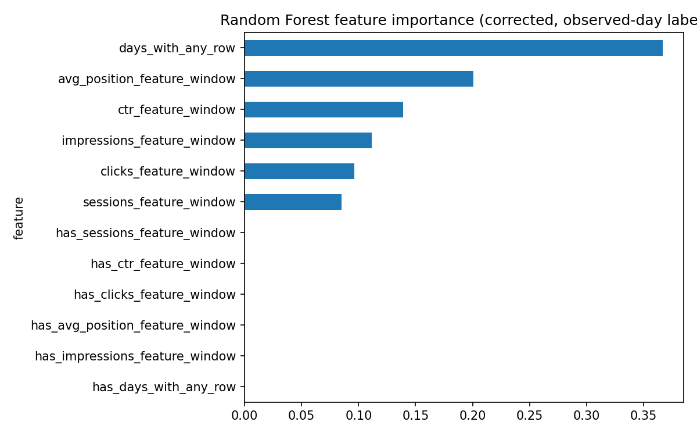

Which pages should a reviewer touch first, before they decline?
A future-observed prediction model for refresh and content-opportunity scoring — built, stress-tested against its own label design, and then checked against a genuinely unseen future month. The strong result didn't survive that last test, and that failure is the finding.
Abstract
Content teams cannot manually review every page every week, so this work asks a narrow, decision-shaped question: given a fixed weekly review capacity, which pages should be prioritized for refresh, expansion, or protection? Using 60 days of prior performance history (Feb–Mar 2026) to predict what actually happened in the following 30 days (April 2026), an initial Random Forest classifier reached 0.76 Precision@50 against a 0.26 baseline rule — but a self-audit found this result was partly inflated by a label-design artifact; after fixing it, Random Forest dropped to 0.62 and Logistic Regression (a steady 0.68 throughout) took the lead again. The more important test came next: applying both fixed models, without retraining, to a genuinely unseen future month (May 2026) — both scored below the random base rate (0.34 and 0.40 against 0.628). A diagnostic traced this to a real shift in the underlying data between windows, not a flaw specific to either model. The paper reports this negative result directly, because it changes what the model can honestly be recommended for.
Introduction & problem statement
The decision this work supports: an SEO or content strategist deciding where to spend limited review time first, out of a large page inventory, this week. The unit of analysis is one content page — a content_id × client_id pair — scored using 60 days of prior history and labeled by what was actually observed in the following 30 days.
Every earlier notebook in this internship (ML‑02 through ML‑10) used the starter dataset's is_declining_label — a proxy computed from the same window it was predicting, not an observed future outcome. This capstone's central methodological upgrade Observed is replacing that proxy with a label built from data the model never sees at prediction time: features come strictly from February–March, and the label comes strictly from April.
Data
Release: FlyRank/internship-warehouse (Hugging Face, gated, build v20260703). Table: fact_content_daily_performance, partitioned by month.
| Window | Range | Rows | Role |
|---|---|---|---|
| Feature window | 2026‑02‑01 → 2026‑03‑31 | 7,355,108 + 9,841,378 | 60 days of history → 349,411 pages |
| Target window | 2026‑04‑01 → 2026‑04‑30 | 10,424,730 | 30 days of outcome → 362,172 pages |
Joining both windows (inner join — a page needs history and an observed outcome to be labeled) yields 331,436 pages. Of those, only 187,778 (56.7%) had any impressions in the feature window and therefore get a computable percent-change label — the rest are excluded by design, not by bug, since "percent change from zero" isn't a meaningful number. Decision-support Base rate on the resulting labeled set: 0.527.
Label definition: is_declining = 1 when the April daily impression rate is more than 10% lower than the Feb–Mar daily rate — matching the FlyRank research paper's own "Down: >10% decline" definition. Rates (not raw totals) are compared because the two windows are different lengths (59 vs. 30 days).
Public-safe note: no client names, domains, URLs, private queries, or credentials appear anywhere in this paper or the underlying notebooks.
Methodology
Validation design
Split by client_id (GroupShuffleSplit, 75/25), not by row — 35 training clients, 12 test clients, zero overlap confirmed. This prevents the model from simply memorizing a client's typical performance level, which produced an 8-point score inflation in an earlier notebook when a row-level split was tested instead.
Baseline
The same rule-based baseline used since ML‑07 (a "low visibility days" + "low CTR for position" flag), rebuilt on this table's actual fields. Its CTR benchmark by position bucket is computed on the training split only, to avoid leaking test information into the rule itself.
Features
Six numeric features, all computed strictly within the Feb–Mar window: days with any tracked activity, total impressions, total clicks, average search position, session count, and click-through rate — plus missingness flags for each.
Leakage audit
Per FlyRank's leakage-hunting checklist, the validation harness was stress-tested by deliberately injecting a column derived directly from the label. Precision@50 jumped from 0.76 to 1.0 Observed — confirming the harness correctly detects leakage when it's present, and by extension, that the real (non-leaky) result below is not an artifact of a broken test.
Results
Act 1 — initial result (Feb–Mar → April, fixed-day label)
All four methods evaluated on the identical held-out client split:
Precision@50 — of the top 50 pages ranked by each method, the fraction that actually declined in April.

On its face, Random Forest reaches 0.76 Precision@50 against a 0.452 base rate — a reversal of an earlier internship finding (ML‑08) where Logistic Regression beat Random Forest on the smaller starter dataset. Directional Before accepting this, the label itself was audited.
Act 2 — auditing the label: fixed-day denominators vs. observed days
The label divided feature-window impressions by a fixed 59 days and target-window impressions by a fixed 30 days, regardless of how many of those days actually had tracked activity — creating a plausible mechanical link between the label and days_with_any_row, which dominated feature importance at 0.57. Observed Re-deriving the label using each page's actual observed days instead of the fixed calendar length and re-running both models on the identical split:
| Metric | Original (fixed-day) label | Fixed (observed-day) label |
|---|---|---|
| Test base rate | 0.452 | 0.488 |
| Logistic Regression P@50 | 0.680 | 0.680 |
| Random Forest P@50 | 0.760 | 0.620 |
Top feature importance (days_with_any_row) | 0.570 | 0.367 |
Act 3 — the real test: an unseen future month
Everything above still only tests a single Feb–Mar → April cut. Using the fixed-label models (already trained, not retrained), a new feature window was built from March–April data and scored against May 2026 outcomes — a month the models never touched during training:
A diagnostic check clarifies why: the underlying data itself shifted structurally between windows, not just the label. Mean daily impression rate fell roughly 15% site-wide between the Mar–Apr feature window and May (45.6 → 38.8), while the earlier Feb–Mar → April window saw the opposite — the mean rose (44.9 → 50.0) even though most individual pages still declined. Observed These are two structurally different periods. A model trained on one does not carry cleanly to the other — evidence of real non-stationarity in the underlying search data, not a defect specific to either algorithm. Directional
Feature importance (fixed label)

days_with_any_row importance falls to 0.367, with avg_position_feature_window rising to 0.201.Limitations & honest framing
- The headline result does not generalize to an unseen future month. Both models scored below the May base rate when applied to a genuinely future window without retraining. This is the paper's most important limitation, not a footnote: as built, this model should not be treated as reliable beyond the specific window it was validated on. Observed
- The underlying data is non-stationary across months. Mean site-wide performance rose in the Feb–Mar → April window and fell in the Mar–Apr → May window — a real shift in the data-generating process, which limits how far any single-snapshot model can be expected to carry forward. Directional
- The initial 0.76 Random Forest result was partly a label-design artifact. Fixing the label's fixed-day denominator dropped Random Forest to 0.62 and returned Logistic Regression to the stronger method — a correction, disclosed rather than left as the headline number.
- ~43% of joined pages are excluded from the labeled set, since a page with zero prior impressions has no meaningful percent-change to measure. Every result applies only to pages with some pre-existing search visibility.
- The baseline rule scores below random — twice. A repeated, genuine finding across two dataset versions about the limits of eyeballed thresholds, not a fluke.
- Several potentially useful fields were not joined in — content metadata and client-level fields (word count, content type, age) live in separate tables not used in this pass, and may help the model adapt to shifting conditions if added.
Per the claim ladder used throughout this internship: every claim above is observed, measured, and directional at most. Not claimed This is cross-sectional, non-experimental data — refreshing a flagged page is not claimed to cause recovery, and nothing here reproduces or predicts a search engine's ranking algorithm.
Ranked recommendations
Scores feed a reason-coded action queue rather than an automated decision. Following the correction in Results, this queue is built on the corrected Logistic Regression scores, not the original Random Forest — on the held-out test set (44,238 pages):
| Action | Pages | Share |
|---|---|---|
| Monitor | 40,190 | 90.8% |
| Rewrite title / meta | 3,376 | 7.6% |
| Review for refresh | 343 | 0.8% |
| Protect / monitor (strong performer) | 329 | 0.7% |
review_for_refresh, which fired on zero pages under the original Random Forest scores, now fires on 343. Observed But inspecting the top-ranked pages surfaced something new: several of the highest "high risk" scores belong to pages with only 1–2 total impressions across the entire 59-day window, showing a CTR of exactly 1.0 (one impression, one click) — a statistically meaningless ratio from near-zero sample size, not a real signal. Observed The corrected model appears to weight these degenerate low-volume cases too heavily. A stronger version of this pipeline would apply a minimum-impression floor before scoring, or use a shrinkage-adjusted CTR instead of a raw ratio.
The GA4-sparsity confidence issue from the original pass is unchanged: confidence stays "low" for nearly every page regardless of GSC strength, since it requires session data most pages don't have.
Governance guardrails carried through from ML‑10: no auto-publishing, no client-facing claims, no evaluating writers — this queue is an input to human review, not a replacement for it.
Reproducibility
- Capstone notebook:
work/notebooks/capstone.ipynb - Full weekly assignment trail (ML‑02 → ML‑10):
work/notebooks/ - Ranked queue, metrics snapshot, and both figures above:
work/outputs/andwork/figures/ - Repository: github.com/maryamsohail32/flyrank-ml-internship
Acknowledgments & data credit
Built on the FlyRank ML Internship dataset — flyrank.ai.